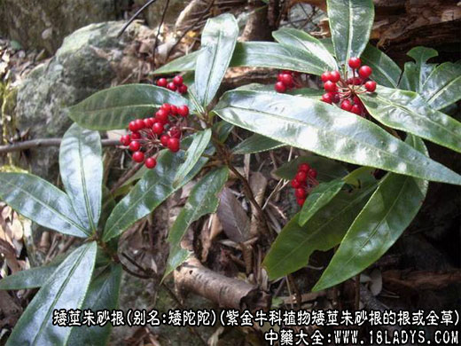

别名：矮陀陀，九管血，八爪金龙，地柑子，大郎伞。
来源：为紫金牛科植物矮茎朱砂根的根或全草。
性状鉴别：常绿小灌木，高10～40厘米。根淡紫棕色，支根肉质。茎光滑无毛。花期6月。
产地：多生于山坡阴湿处。分布湖北等地。6～7月采。
功效与作用：全草：味苦涩微甘，性微寒。祛风清热，散瘀消肿。治咽喉肿痛，风火牙痛，风湿筋骨疼痛，腰痛，跌打损伤，无名肿毒。《植物名实图考》：“通窍，和血，去风。”《贵州草药》：“清热，利咽，化瘀。”内服：煎汤，9～15克；或浸酒。《中草药土方土法》：“孕妇慎服。”
处方举例：
①防治白喉：鲜矮茎朱砂根60克。加水1000克，小火煎2小时，滤去渣。分8份，每隔2小时服1次(《中草药土方土法》)。鲜矮陀陀0.9克。切碎后含口中慢慢咽汁，1小时换1次(《贵州草药》)。
②治喉风：矮陀陀适量。切碎，泡淘米水服或含(《贵州草药》)。③治腰痛：矮茎朱砂根，泡酒服，1天服2次(《中草药土方土法》)。④治跌打损伤：矮陀陀60克。泡酒服(《贵州草药》)。⑤治风火牙痛：矮陀陀少许。切碎，放于牙痛处，口涎让其流出，随时更换(《贵州草药》)。